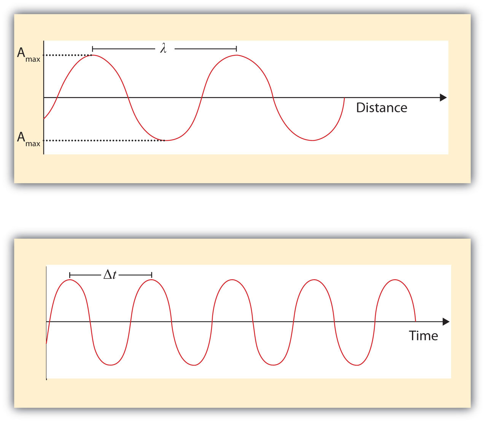
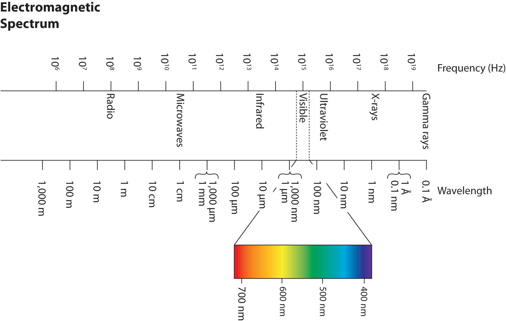

What we know as light is more properly called electromagnetic radiation. We know from experiments that light acts as a wave. As such, it can be described as having a frequency and a wavelength. The wavelengthThe distance between corresponding points in two adjacent light cycles. of light is the distance between corresponding points in two adjacent light cycles, and the frequencyThe number of cycles of light that pass a given point in one second. of light is the number of cycles of light that pass a given point in one second. Wavelength is typically represented by λ, the lowercase Greek letter lambda, while frequency is represented by ν, the lowercase Greek letter nu (although it looks like a Roman “vee,” it is actually the Greek equivalent of the letter “en”). Wavelength has units of length (meters, centimeters, etc.), while frequency has units of per second, written as s−1 and sometimes called a hertz (Hz). Figure 8.1 "Characteristics of Light Waves" shows how these two characteristics are defined.
Figure 8.1 Characteristics of Light Waves
Light acts as a wave and can be described by a wavelength λ and a frequency ν.
One property of waves is that their speed is equal to their wavelength times their frequency. That means we have
For light, however, speed is actually a universal constant when light is traveling through a vacuum (or, to a very good approximation, air). The measured speed of light (c) in a vacuum is 2.9979 × 108 m/s, or about 3.00 × 108 m/s. Thus, we have
Because the speed of light is a constant, the wavelength and the frequency of light are related to each other: as one increases, the other decreases and vice versa. We can use this equation to calculate what one property of light has to be when given the other property.
What is the frequency of light if its wavelength is 5.55 × 10−7 m?
Solution
We use the equation that relates the wavelength and frequency of light with its speed. We have
We divide both sides of the equation by 5.55 × 10−7 m and get
Note how the m units cancel, leaving s in the denominator. A unit in a denominator is indicated by a −1 power—s−1—and read as “per second.”
Test Yourself
What is the wavelength of light if its frequency is 1.55 × 1010 s−1?
Answer
0.0194 m, or 19.4 mm
Light also behaves like a package of energy. It turns out that for light, the energy of the “package” of energy is proportional to its frequency. (For most waves, energy is proportional to wave amplitude, or the height of the wave.) The mathematical equation that relates the energy (E) of light to its frequency is
where ν is the frequency of the light, and h is a constant called Planck’s constantThe proportionality constant between the frequency and the energy of light.. Its value is 6.626 × 10−34 J·s—a very small number that is another fundamental constant of our universe, like the speed of light. The units on Planck’s constant may look unusual, but these units are required so that the algebra works out.
What is the energy of light if its frequency is 1.55 × 1010 s−1?
Solution
Using the formula for the energy of light, we have
E = (6.626 × 10−34 J·s)(1.55 × 1010 s−1)Seconds are in the numerator and the denominator, so they cancel, leaving us with joules, the unit of energy. So
E = 1.03 × 10−23 JThis is an extremely small amount of energy—but this is for only one light wave.
Test Yourself
What is the frequency of a light wave if its energy is 4.156 × 10−20 J?
Answer
6.27 × 1013 s−1
Because a light wave behaves like a little particle of energy, light waves have a particle-type name: the photonThe name of a wave of light acting as a particle.. It is not uncommon to hear light described as photons.
Wavelengths, frequencies, and energies of light span a wide range; the entire range of possible values for light is called the electromagnetic spectrumThe full span of the possible wavelengths, frequencies, and energies of light.. We are mostly familiar with visible light, which is light having a wavelength range between about 400 nm and 700 nm. Light can have much longer and much shorter wavelengths than this, with corresponding variations in frequency and energy. Figure 8.2 "The Electromagnetic Spectrum" shows the entire electromagnetic spectrum and how certain regions of the spectrum are labeled. You may already be familiar with some of these regions; they are all light—with different frequencies, wavelengths, and energies.
Figure 8.2 The Electromagnetic Spectrum
The electromagnetic spectrum, with its various regions labeled. The borders of each region are approximate.
Describe the characteristics of a light wave.
What is a characteristic of a particle of light?
What is the frequency of light if its wavelength is 7.33 × 10−5 m?
What is the frequency of light if its wavelength is 1.226 m?
What is the frequency of light if its wavelength is 733 nm?
What is the frequency of light if its wavelength is 8.528 cm?
What is the wavelength of light if its frequency is 8.19 × 1014 s−1?
What is the wavelength of light if its frequency is 3.66 × 106 s−1?
What is the wavelength of light if its frequency is 1.009 × 106 Hz?
What is the wavelength of light if its frequency is 3.79 × 10−3 Hz?
What is the energy of a photon if its frequency is 5.55 × 1013 s−1?
What is the energy of a photon if its frequency is 2.06 × 1018 s−1?
What is the energy of a photon if its wavelength is 5.88 × 10−4 m?
What is the energy of a photon if its wavelength is 1.888 × 102 m?
Light has a wavelength and a frequency.
4.09 × 1012 s−1
4.09 × 1014 s−1
3.66 × 10−7 m
297 m
3.68 × 10−20 J
3.38 × 10−22 J